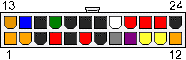

24-pin ATX12V 2.x

| Color | Signal | Pin | | Pin | Signal | Color |
| ————- | —————— | ———- |——-| ———- | —————— | ————- |
| Orange | +3.3 V | 1 | | 13 | +3.3 V | Orange |
| | | | | | +3.3 V sense | Brown |
| Orange | +3.3 V | 2 | | 14 | -12 V | Blue |
| Black | Ground | 3 | | 15 | Ground | Black |
| Red | +5 V | 4 | | 16 | Power on | Green |
| Black | Ground | 5 | | 17 | Ground | Black |
| Red | +5 V | 6 | | 18 | Ground | Black |
| Black | Ground | 7 | | 19 | Ground | Black |
| Grey | Power good | 8 | | 20 | -5V | White |
| Purple | +5 V standby | 9 | | 21 | +5 V | Red |
| Yellow | +12 V | 10 | |22 | +5 V | Red |
| Yellow | +12 V | 11 | | 23 | +5 V | Red |
| Orange | +3.3 V | 12 | | 24 | Ground | Black |
20-pin ATX connector omits the last four pin: 11, 12, 23, 24)
Pins 8, 13, and 16 are control signals:
- “Power On” is pulled up to +5V by the PSU, and must be driven low to turn on the PSU.
- “Power good” is low when other outputs have not yet reached, or are about to leave, correct voltages.
“+3.3 V sense” line is for remote sensing of the voltage drop in the power supply wiring (should be connected to the +3.3 V on the motherboard)
“+5 V standby” supplies power even when the rest of the supply lines are off.
Pin 20 (-5V, white) is absent in current power supplies; it was optional in ATX and ATX12V ver. 1.2, and deleted as of ver. 1.3.
ATX Aux Power Cable
| Pin | Color | Function |
| ———- | ————- | —————— |
| 1 | Black | Ground |
| 2 | Black | Ground |
| 3 | Black | Ground |
| 4 | Orange | +3.3 V |
| 5 | Orange | +3.3 V |
| 6 | Red | +5 V |
ATX 4pin +12V Power Cable
| Color | Function | Pin | Pin | Function | Color | |
|---|---|---|---|---|---|---|
| Black | Ground | 1 | 3 | +12 V | Yellow | |
| Black | Ground | 2 | 4 | +12 V | Yellow |
ATX 8pin EPS +12V Power Cable

| Color | Function | Pin | Pin | Function | Color | |
|---|---|---|---|---|---|---|
| Black | Ground | 1 | 5 | +12 V | Yellow | |
| Black | Ground | 2 | 6 | +12 V | Yellow | |
| Black | Ground | 3 | 7 | +12 V | Yellow | |
| Black | Ground | 4 | 8 | +12 V | Yellow |
You can plug an 8pin EPS cable into a 4pin 12V motherboard.
You also can plug a 4pin 12V power cable into an 8pin EPS motherboard connector but there’s no guarantee that it will work.
6/8pin PCI Express Power Cable


| Color | Function | Pin | Pin | Function | Color | ||
|---|---|---|---|---|---|---|---|
| Yellow | +12 V | 1 | 5 | Ground | Black | ||
| Yellow | +12 V | 2 | 6 | Ground | Black | ||
| Yellow | +12 V | 3 | 7 | Ground | Black | ||
| Black | Ground | 4 | 8 | Ground | Black |
6 pin connector maximum wattage delivery: 75 Watt
8 pin connector maximum wattage delivery: 150 Watt
ATX Tolerance
| Volt | Tolerance | Range | Ripple max |
|---|---|---|---|
| +5 VDC | ±5% (±0.25 V) | +4.75 V to +5.25 V | 50 mV |
| -5 VDC | ±10% (±0.50 V) | -4.50 V to -5.50 V | 50 mV |
| +12 VDC | ±5% (±0.60 V) | +11.40 V to +12.60 V | 120 mV |
| -12 VDC | ±10% (±1.2 V) | -10.8 V to -13.2 V | 120 mV |
| +3.3 VDC | ±5% (±0.165 V) | +3.135 V to +3.465 V | 50 mV |
| +5 VSB | ±5% (±0.25 V) | +4.75 V to +5.25 V | 50 mV |